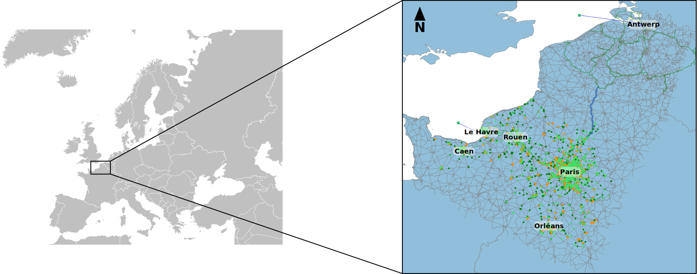
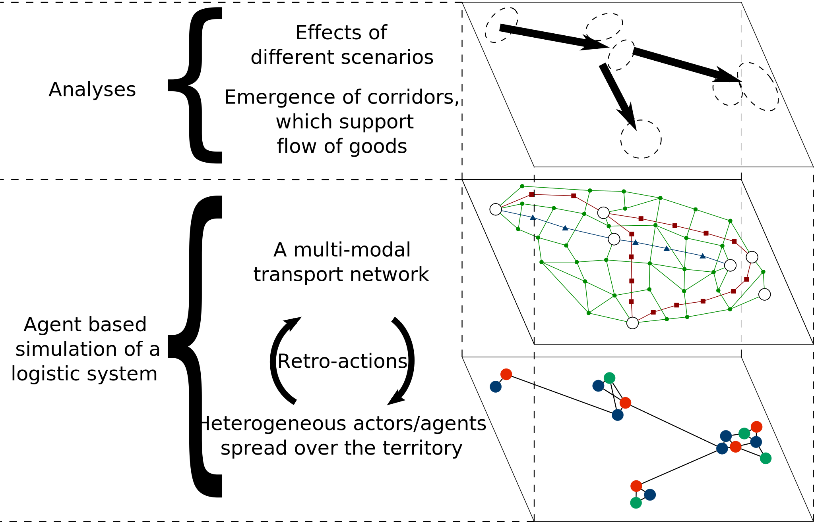
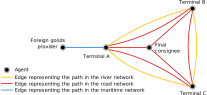
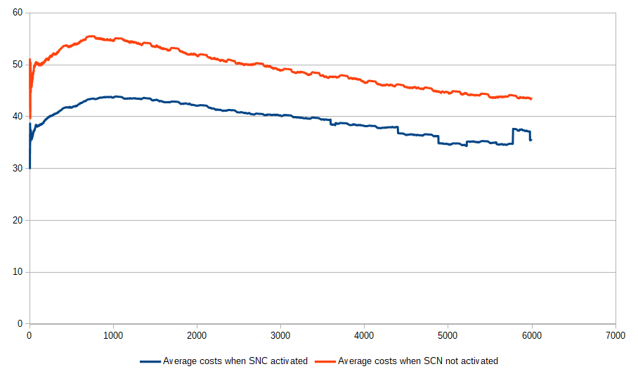

Thibaut Démare - LITIS
thibaut.demare@univ-lehavre.fr
thibaut.demare@univ-lehavre.fr
Modelling a Multi-Modal Logistic Network with Agents and Dynamic Graphs
MODSIM 2019
Canberra, Australia
1st-6th December 2019
Canberra, Australia
1st-6th December 2019
Modelling a Multi-Modal Logistic Network with Agents and Dynamic Graphs
Thibaut Démare
Stefan Balev, Cyrille Bertelle, Antoine Dutot, Dominique Fournier and Eric Sanlaville
Université Le Havre Normandie - LITIS
MODSIM 2019, Canberra, Australia
1st-6th December 2019
Plan
- Context
- Modelling
- Results
- Conclusion
Context
Presentation of a logistic system
- A logistic system is part of a geographical territory composed of urban areas and of logistic structures.
- The different kinds of flows (of goods, of information, or financial) are organized by actors and thanks to infrastructures (roads, warehouses, terminals,...).
- The goods enter and leave the system through well-known access nodes.
- Cities or urban areas attract and generate these flow.
- Different constraints (spatial, economical, political, or ecological) act over the system.
Design a model and its simulation to understand how such a system (with numerous stakeholders) behaves and evolves according to different constraints or scenarios.
The Seine axis territory

Fig. 1: Screenshot of the simulation with every agents
Fig. 1: Screenshot of the simulation with every agents
Problematic and approach
- Tavasszy et al. (2012) explain that models in the litterature often lack of dynamism or simulate a reduced territory or number of actors. Finally, it is also difficult to access to data about flow of goods.
- We want to propose an agent-based model which represents the properties, constraints and behaviours at a local level of a logistic system in order to reproduce the global behaviours thanks to the simulation.
- We want our model to require a minimum quantity of data in open access.
- The simulation allows to test different scenarios to understand how local decisions and properties impact the whole system.
Modelling
Overall architecture

Fig. 2: Simplified representation of our model
Fig. 2: Simplified representation of our model
Agents involved in stocks management
Fig. 3: Agents involved in stocks management.
The multi modal transport network and its constraints
- During a multi modal transport, goods may switch from one mode to another (e.g. from road to river network). To do so, they pass through particular agents which model multi-modal terminals.
- This involves additional costs (financial or time).
- Vehicles have capacities according to the mode they belong to.
- Terminals also have limited capacities at each step and for each mode to manage entering or leaving vehicles.
- We use dynamic graphs to model the transportation network, so, the topology can evolve in real time, as the travel times.
Agents involved in goods transportation
Fig. 4: Agents involved in goods transportation.
A multi-modal transportation network
Fig. 5: Example of 3 transportation
modes connected by agents

Fig. 6: The obtained multi-modal network from fig. 5
Fig. 6: The obtained multi-modal network from fig. 5
Results
The simulation platform
- The model has been implemented on the GAMA platform (a spatially agent-based simulations platform).
- The implementation simulates the system hour by hour thanks to reactive agents.
- To make this particular study :
-
We use real data about the Seine axis territory (up to around 13 000 agents) in order to make our analyses and to validate our model.
- 3000 warehouses.
- 500 final consignees among 7700 wholesalers.
- 2250 logistics service providers.
- Tens of terminals.
- 3 modes of transport: maritime, river and road.
- Two foreign goods providers (one connected to the port of Le Havre (France), the other one connected to Antwerp (Belgium)).
-
we executed 16 simulations for 6000 steps (around 8 months):
- 8 simulations with the Seine-Nord Europe Canal (SNC) opened
- and 8 simulations without the SNC.
-
We use real data about the Seine axis territory (up to around 13 000 agents) in order to make our analyses and to validate our model.
Traffic

Fig. 7: River traffic at step 125 when SNC is closed

Fig. 8: River traffic at step 125 when SNC is opened
Traffic

Fig. 9: Road traffic at step 125 when SNC is closed

Fig. 10: Road traffic at step 125 when SNC is opened
Mode shares
| SNC closed | SNC opened | |
|---|---|---|
| Road | 62% | 49.9% |
| River | 38% | 50.1% |
Fig. 11: Mode share between river and road traffic when the SNC is opened or closed.
Evolution of the average financial costs

Figure 11: Evolution of the average financial costs when the SNC is opened or not. We notice an increase of 25% of the costs when the SNC is closed.
Figure 11: Evolution of the average financial costs when the SNC is opened or not. We notice an increase of 25% of the costs when the SNC is closed.
Competition between Le Havre and Antwerp
- 2.9 times more agents who have chosen Le Havre compared to Antwerp when the SNC is closed.
- 1.25 times more agents who have chosen Le Havre compared to Antwerp when the SNC is opened.
- According to the parameters of our simulation and its design, it is normal that Le Havre is preferred in both cases.
- But the simulation shows that the SNC project will have economical impacts on the competition between Le Havre and Antwerp since it allows to Antwerp to capture some market shares to the port of Le Havre.
- Moreover, this project will have environmental impact because it should reduce the number of trucks between Antwerp and Paris favouring river barges instead.
Conclusion and perspectives
Main points
- We used an agent based model and dynamic graphs to represent and simulate a logistic system.
- This method is flexible because it allows to simulate numerous different scenarios.
- The dynamic graphs allows to have a really dynamic simulation with a transportation network which evolve in real time.
- The agents are auto-organized to manage to flow of goods and adapt themselves to modifications of the system.
Main points
- In particular, we highlighted, thanks to our simulation, the impacts of a major project in Europe : the Seine Nord Europe Canal which will link Antwerp to Paris by river barges.
- We showed that there will be economical and environmental effects.
- Nonetheless, the model has several limits in particular due to simplified interactions between the agents. These interactions cannot consider all the complexity of real actors of the logistics.
Perspectives
- We are working on analyses of different scenarios thanks to data science methods.
- And we also want to study the short sea shipping capacities of the Seine axis territory thanks to a secondary maritime network.
Thank you for your attention
thibaut.demare@univ-lehavre.fr
Citations
- Lóránt A Tavasszy, Ben Smeenk, and Cees J Ruijgrok. A dss for modelling logistic chains in freight transport policy analysis. International Transactions in Operational Research, 5(6):447 – 459, 1998. ISSN 0969-6016. doi : http://dx.doi.org/10.1016/S0969-6016(98)00045-8.
- Barry Zondag, Pietro Bucci, Padideh Gützkow, and Gerard de Jong. Port competition modeling including maritime, port, and hinterland characteristics. Maritime Policy & Management, 37(3) :179–194, 2010.
- Amir Samimi, Abolfazl Mohammadian, and Kazuya Kawamura. A behavioral freight movement microsimulation model : method and data. Transportation Letters, 2(1) :53–62, 2010. doi : 10.3328/TL.2010.02.01.53-62.
- Francesco Parola and Anna Sciomachen. Intermodal container flows in a port system network: Analysis of possible growths via simulation models. International Journal of Production Economics, 97(1):75–88, 2005. ISSN 0925-5273. doi: http://dx.doi.org/10.1016/j.ijpe. 2004.06.051.
- David L. Huff. Defining and estimating a trading area. Journal of Marketing, 28(3): pp. 34–38,1964.
- Alfonso Shimbel. Structural parameters of communication networks. The bulletin of mathematical biophysics, 15(4): 501–507, 1953. doi: 10.1007/BF02476438.